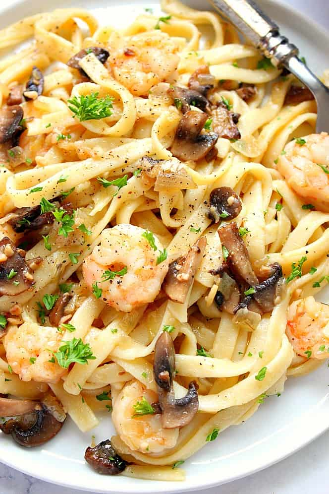

Mushroom Shrimp Fettucine Alfredo

Description
Who doesn't love a good pasta dish?! When I'm craving some italian and seafood, my first thought is always shrimp alfredo. You can use any pasta and pair it with a veggie of your choice (or don't), either way, still delicious!
This meal makes for a great comfort food night paired with some garlic bread. Or, a modest lunch in the summer preceded by a light salad. Maybe even a nice wine for a romantic date night meal. Whatever the occasion, this meal is sure to be a winner.
Ingredients
- 1 box dry fettucine pasta (16 oz)
- 1 1/4 cup butter(divided)
- 1 pint heavy whipping cream
- 3/4 cup grated Roman cheese
- 1/2 cup grated Parmesan cheese
- 3 cloves of garlic, crushed (divided)
- 2 tbsp olive oil
- 1 large onion, chopped
- 8 oz diced mushrooms
- 1 (8 oz) package frozen shrimp, deveined (with or without tail), thawed
- salt and pepper to taste
- dash of paprika
- 2 tbsp chopped parsley
Steps
- In a large pot, bring lightly salted water to a boil over medium heat. When ready, stir in fettucine pasta, return to a boil and cook until tender yet firm to the bite, or about 8-10 minutes. Drain and keep warm.
- Heat 1 cup of butter and cream in a large saucepan over meadium heat. When butter melts, add both cheeses (Romano and Parmesan), 1/3 of the crushed garlic, salt, paprika, and pepper. Cook and stir until cheese melts and sauce thickens, about 5-6 minutes. Remove from heat.
- Heat the remaining 1/4 cup butter and olive oil in another saucepan over medium heat. When butter melts, add onion and sauté for about 2-3 minutes. Stir in mushrooms and remaining crushed garlic. Increase heat to medium-high and cook until mushrooms are soft for about 2 minutes. Add shrimp and cook for about 2 minutes on each side or until bright pink on the outside and opaque on the inside.
- Fold the shrimp mixture into the alfredo sauce. Add drained fettucine and toss to coat. Top with parsley.